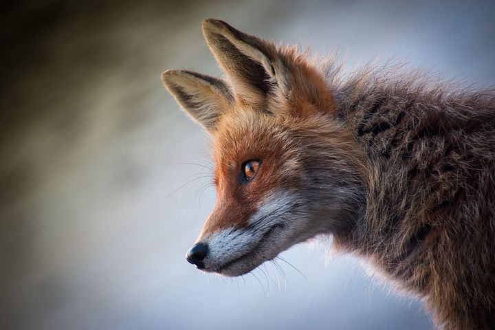

Welcome to the Fox's Den
Foxes are magnificent creatures. These creatures have very unique habits in the wild. This blog will dive into the secrets these creatures have.
- Many people don't know a lot about foxes.
- Foxes are hunted for their fur and in some places they are hunted for sport.
- However these animals pose no threat to humans when not messed with.
- They are cousins to wolves and dogs.